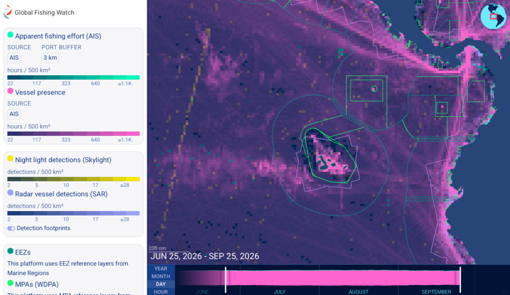
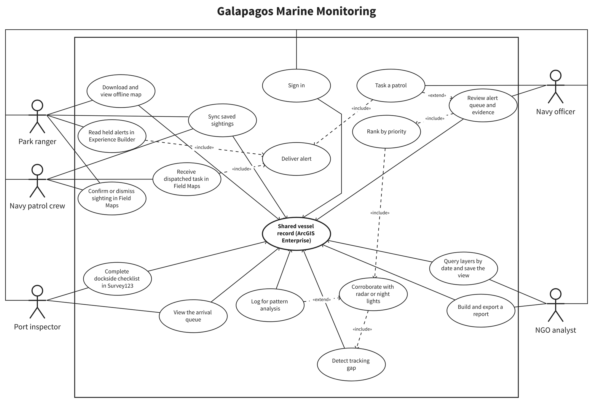
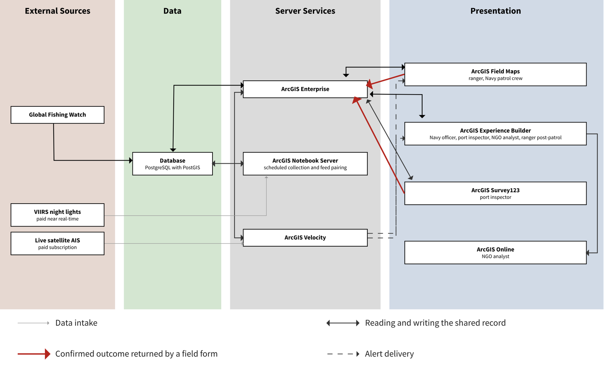
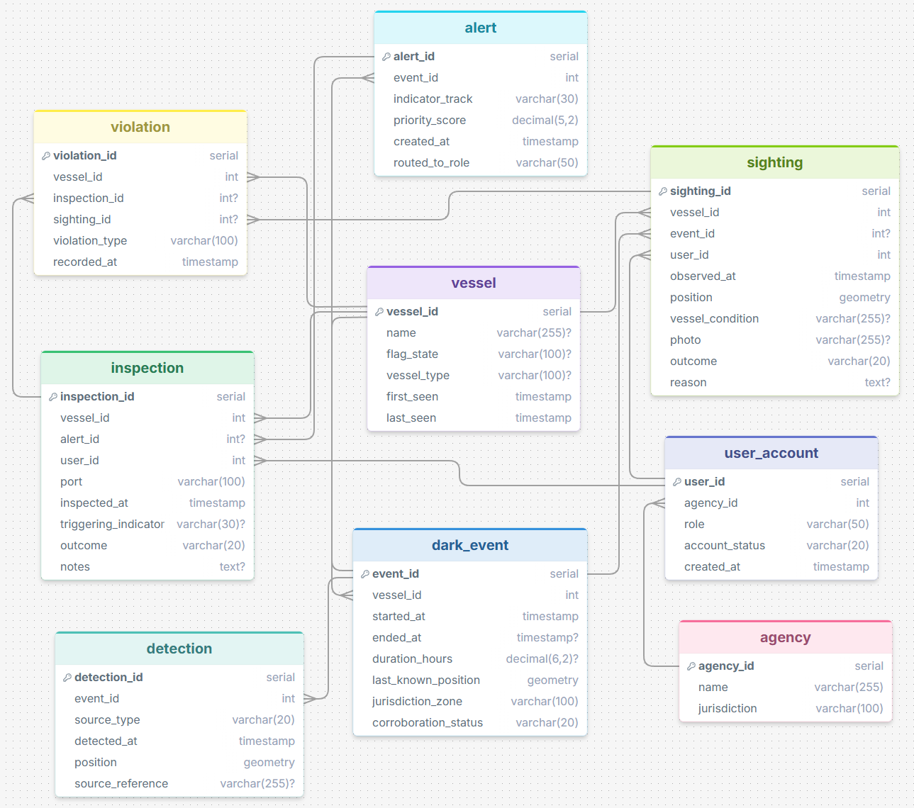
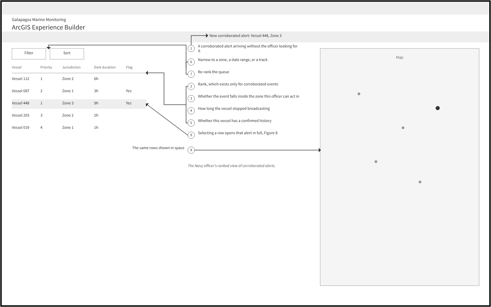
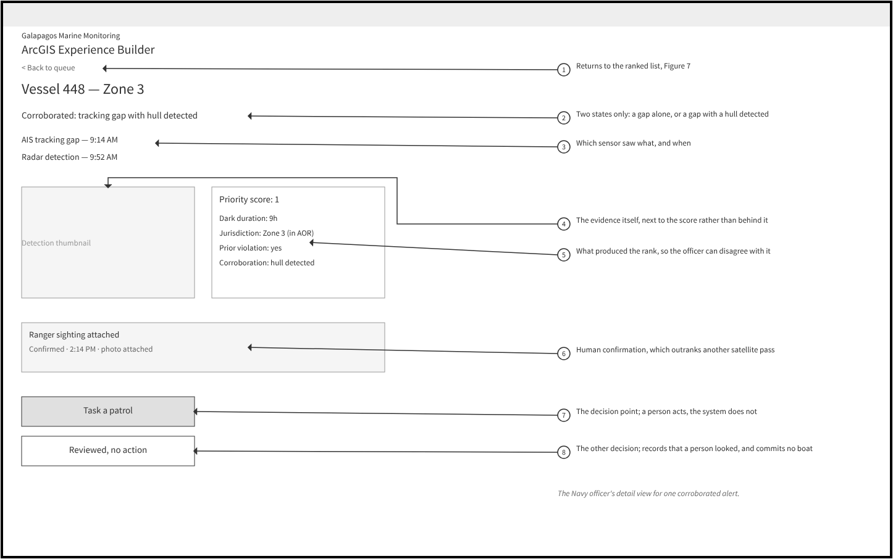
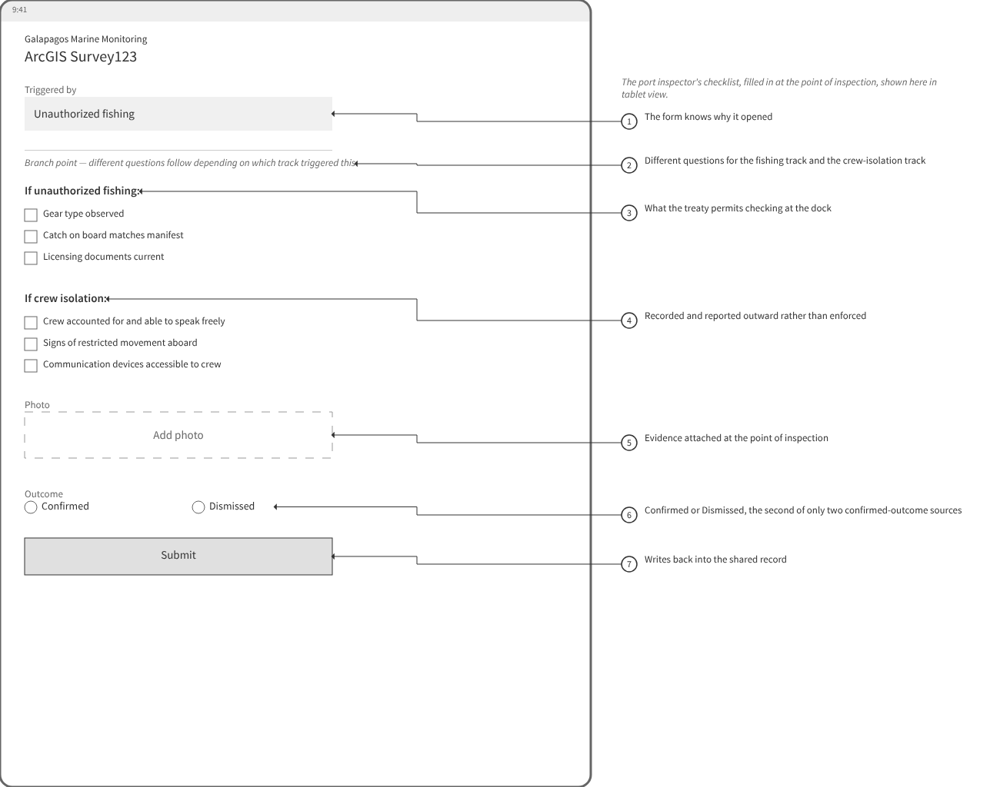
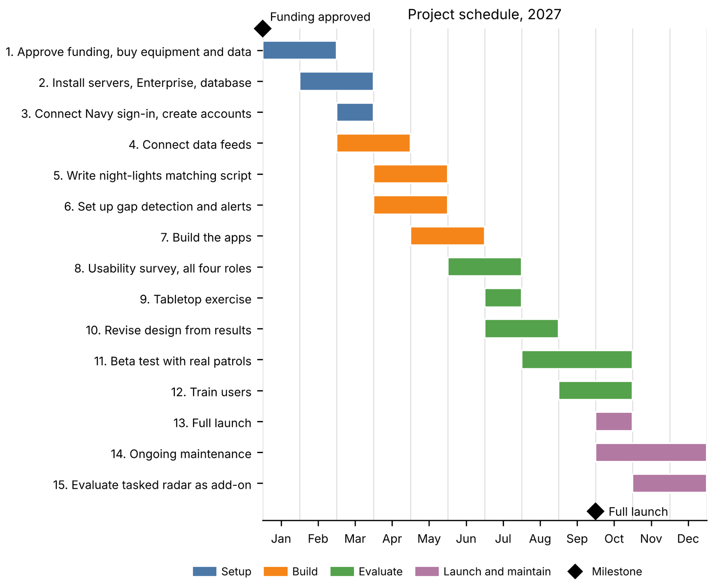

A GIS system design proposal for routing illegal fishing and forced labor alerts to the authority that can act | GEOG 583: Geospatial Analysis and Design, Penn State | October 2026
This is a class project. It is written as a funding proposal addressed to the Ecuadorian Navy. It was written for the course, not for or with the Navy or any Ecuadorian agency, and nothing described here has been built.
Illegal, unreported and unregulated fishing is a recurring threat inside the Galapagos Marine Reserve and Ecuador's exclusive economic zone (EEZ). Vessels can switch off their AIS (Automatic Identification System) transponders to avoid being tracked, which is called "going dark." Published research cited in the proposal found that between 14 and 26% of more than 16,000 fishing vessels were at high risk for forced labor, and Ecuador has faced a European Commission yellow card warning over illegal fishing since 2019.
Detecting suspicious vessels is not the missing piece. Global Fishing Watch and other platforms already do that. What is missing is a system that sends each alert to the right authority. Four groups work these waters with different legal powers: Galapagos National Park rangers, Ecuadorian Navy officers, port inspectors, and analysts at non-governmental organizations (NGOs). No single system decides which of them should receive a given alert.

This map shows the kinds of data the system would draw on. The design pairs these layers so that a gap in a vessel's tracking can be checked against an independent detection at the same place and time.
This is a system design proposal, so the work is design rather than data analysis. I worked through it in these steps:
The core logic works like this. When a vessel stops broadcasting AIS, that gap is only a lead. It becomes an alert only when radar or night-lights data places a hull at that position. Corroborated alerts are ranked by where the event happened, how long the vessel stayed dark, and whether it has a confirmed prior violation. Each alert carries two separate indicators: unauthorized fishing, and crew isolation, which is associated with forced labor. A person reviews every alert and sees the evidence behind it before anything is acted on.
The four roles do not all have the same legal authority, so they should not all see the same screen. The diagram below shows the tasks each role would perform and how those tasks meet at one shared vessel record. A fifth figure, the Navy patrol crew, receives a dispatched task from the officer rather than working the queue itself.

The proposed system has four layers: three external data sources, the shared vessel record, the server components that publish and deliver that record, and the four applications people would use. ArcGIS Velocity is added to detect tracking gaps and deliver alerts, because none of the software options I compared includes alert delivery in its core parts.

Everything the system would know about a vessel lives in one nine-table database: who the vessel is, each time it stopped broadcasting and what confirmed it, the resulting alert and where it was routed, and its past violations, inspections and sightings. The schematic shows the fields and how the tables connect. It has not been built.

The two wireframes below show the Navy officer's queue and the evidence screen behind a single alert. Vessel names, times and scores in these mockups are illustrative placeholders, not real detections.


At the dock, a port inspector would see a different form. Ecuador has ratified the Port State Measures Agreement, which covers illegal fishing, but not the International Labour Organization Work in Fishing Convention (C188), which protects crews. So the checklist changes its questions depending on which indicator triggered the alert, and a crew-isolation finding would be recorded and reported outward rather than enforced at the dock.

I also designed wireframes for the park ranger and the NGO analyst. Those are not shown here, so this page stays focused on routing, review and the legal split between the two indicators rather than every screen.
I compared three complete stacks against criteria taken from the work itself: offline field use, role-based views over one record, joining the tracking and night-lights feeds, showing evidence next to the score, and cost to acquire, build and maintain. I chose the ArcGIS option because four agencies would read one record and act on different parts of it, and because a shared platform answers that directly. The table below is from the class proposal.
| Criterion | Proprietary (chosen) | Open source | Customizable |
|---|---|---|---|
| Offline field capture that reconciles on return | Built in (Field Maps) | Built in (QField) | Built from scratch |
| Role-based views over one shared record | Built in (Experience Builder) | Coded per role | Coded per role |
| Joining the two data feeds | Custom script required | Custom script required | Custom script, expected up front |
| Scheduled pull of the night-lights data | Added licensed Esri component | Outside script run on a timer | Built into the database |
| Evidence shown alongside the score | Built in | Coded | Coded |
| Alert delivery to a connected user | Not built in; ArcGIS Velocity added to the request | None built in; hosted notification service or custom code | None built in; hosted notification service or custom code |
| Cost to acquire | Three separate licenses: Enterprise, Notebook Server, real-time alerting | None | No license; recurring usage billing |
| Cost to build | Low (configuration) | Moderate (coding plus configuration) | High (everything coded) |
| Cost to maintain and staff | Self-hosted server, dedicated staff | Self-hosted server, dedicated staff | Managed cloud, no server staff |
| Vendor lock-in | Structural (proprietary format across all client apps) | Low (open standards) | Low (custom code, open underlying engine) |
The three software options compared against criteria drawn from the system's design requirements. This comparison is part of the class proposal. It is not a vendor evaluation performed for a live procurement.
Esri does not publish prices for most of its products, so the table mixes published price lists with estimates, and each row says which. The Esri list prices come from a 2019 state contract, and the Velocity figure is one agency's quote. Several costs would still need a current quote before any real budget could be set. These figures are from the class proposal, not from a vendor quote received for a live build.
| Item | Cost | One-time or yearly | Basis |
|---|---|---|---|
| Three server machines | $30,000 | One-time | Estimate (about $10,000 each) |
| 20 phones and 4 tablets | $12,400 | One-time | Estimate (20 field users and 4 port inspectors at first rollout) |
| Contractor setup | $40,000 | One-time | Estimate (400 hours at $100 an hour) |
| ArcGIS Notebook Server | $18,000 | One-time | Esri (2019) price list, State of Idaho (perpetual license, up to four cores) |
| ArcGIS Enterprise Standard | $10,800 | Yearly | Esri (2019) price list, State of Idaho (365-day term, up to four cores) |
| ArcGIS Velocity | $90,000 | Yearly | One agency's quote (Stoelb, 2024) |
| ArcGIS Online and user licenses | $15,000 | Yearly | Estimate (Esri does not publish user prices) |
| Live satellite ship tracking | $100,000 | Yearly | Estimate (Canada paid CA$1.41 million for one year of global data; Spire Global, 2024) |
| Near real-time night-lights | $10,000 | Yearly | Estimate (price not published; Earth Observation Group, n.d.) |
| System administrator | $8,892 | Yearly | Paylab (n.d.), Ecuador, $741 a month (fewer than 20 respondents) |
| Global Fishing Watch data and boundaries | $0 | Yearly | Free datasets |
| Total | $100,400 one-time; about $234,700 yearly | ||
Estimated costs of creating, implementing and maintaining the proposed system, from the class proposal. Several rows are estimates.
| What the figures are set against | Amount | Source |
|---|---|---|
| Tourism, fishing and shipping in the Galapagos exclusive economic zone, 2018 | $509.1 million generated for Ecuador's economy | "Galapagos aporta 509 millones" (2025), reporting a study by Ecuador's Ministry of Environment, the Charles Darwin Foundation, the Galapagos National Park Directorate and the Central Bank |
| Legal fishing | Over $110 million a year | Charles Darwin Foundation (2025) |
| Tourism, 2018 | Over $275 million | Charles Darwin Foundation (2025) |
| Net benefit, illustration: protecting 1% of legal fishing value minus the yearly cost | About $865,000 a year (about $1.1 million minus about $234,700) | Calculated from the cost table and Charles Darwin Foundation (2025). This is an illustration, not a forecast. |
Published economic figures the proposal sets the yearly cost against. The 1% comparison is an illustration, not a forecast of what the system would protect.
The schedule starts if funding were approved in January 2027. Setup comes first, then build, evaluation, a proposed full launch in October 2027, and maintenance. These dates are part of the class proposal. The system has not been funded or built.

Not listed yet. This project is a design proposal, so there is no analysis code.